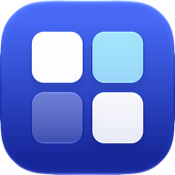

Zonely
Designed to work specifically with Daikin SkyFi units.
Zonely controls a Daikin air conditioner with a SkyFi unit from your iPhone, iPad, Mac and Apple Watch: power, mode, fan, temperature, zones and timers. It talks directly to your unit, with no account and no cloud.
Compatibility
Zonely works with Daikin ducted air conditioners fitted with a SkyFi Wi‑Fi unit, the controller that came with SkyFi systems and the official SkyFi app.
- How to tell: a SkyFi unit has a label with its PIN, and its wall controller has ▲/▼ TEMP, MODE, FAN and ON/OFF TIMER keys above a row of zone buttons.
- Not supported: other Daikin Wi‑Fi adapters, such as Airbase or the Daikin Mobile Controller, work differently and won't connect.
- Not sure? Zonely is free. Install it, tap Add Your Unit, enter its address and PIN, and tap Test connection. If it connects, it's compatible.
What you need
- A Daikin air conditioner with a SkyFi unit, connected to your home Wi‑Fi.
- The unit's IP address on your network, for example 192.168.1.50. Your router's list of connected devices shows it.
- The unit's PIN, printed on the unit's label.
Tip: reserve the unit's IP address in your router (often called a DHCP reservation) so it doesn't change.
Common questions
Zonely can't connect at home
Check that your device is on the same Wi‑Fi as the unit, and that Zonely is allowed Local Network access in Settings → Privacy & Security → Local Network. Then check the unit's Home address in Zonely's Settings (tap ⓘ next to the unit).
Can I control it away from home?
Yes, if you set up remote access yourself: for example dynamic DNS with port forwarding on your router, or a reverse proxy. Enter that address as the unit's Away address. Zonely tries Home first, then Away. SkyFi units only speak plain HTTP, so HTTPS on your reverse proxy is recommended.
The unit is slow to respond
SkyFi units can only handle one request at a time. Zonely sends requests one by one and retries automatically. A longer refresh interval in Settings can help.
What does Zonely Pro include?
A one-time purchase (not a subscription), shared with your Family Sharing group, that adds:
- more than one unit
- the Apple Watch app and complications
- Home Screen and Lock Screen widgets
- Control Centre and Lock Screen controls
- Siri and Shortcuts
I bought Pro on another device
Open Settings → Zonely Pro → Restore Purchases, signed in with the same Apple Account.
Can I try it without a unit?
Yes. Add the Demo Unit from the welcome screen or Settings. It behaves like a real unit but doesn't control anything.
Contact
Email psi70y@gmail.com. Please include your device, iOS version and what you were trying to do.
Privacy Policy · Zonely isn't affiliated with or endorsed by Daikin.